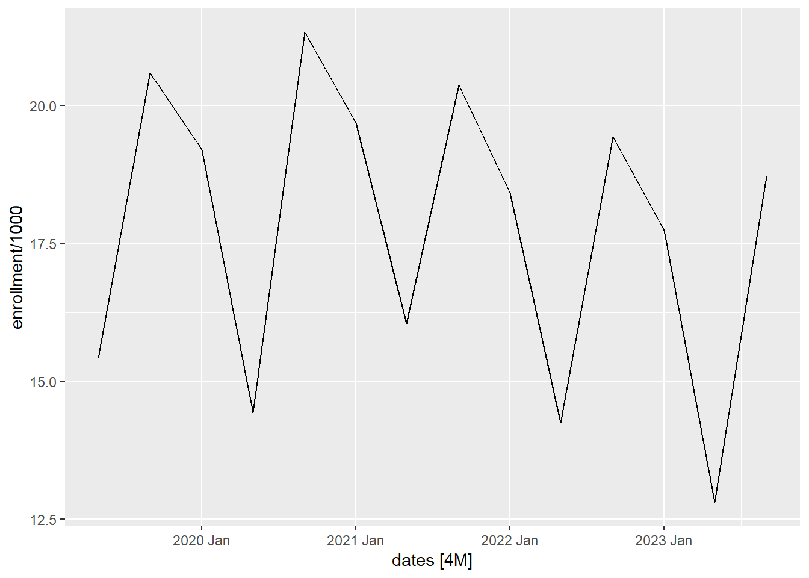

Implement the Holt-Winter method to forecast time series
Justify the need for the Holt-Winters method of exponential smoothing
Describe how to obtain initial parameters for the Holt-Winters algorithm
Explain the Holt-Winters method equations for additive decomposition models
Explain the purpose of the paramters \(\alpha\), \(\beta\), and \(\gamma\)
Interpret the coefficient estimates \(a_t\), \(b_t\), and \(s_t\) of the Holt-Winters smoothing algorithm
Explain the Holt-Winters forecasting equation for additive decomposition models, Equation (3.22)
Use HoltWinters() to forecast additive model time series
Plot the Holt-Winters decomposition of a TS (see Fig 3.10)
Plot the Holt-Winters fitted values versus the original time series (see Fig 3.11)
Superimpose plots of the Holt-Winters predictions with the time series realizations (see Fig 3.13)
Introduction to the Holt-Winters Method (Additive Model)
Exponentially Weighted Moving Average (EWMA) or Simple Exponential Smoothing
The exponential weighted moving average (EWMA) is a simple method for smoothing (or filtering) a time series. We update the estimate of the level of the time series as:
\[
a_t = \alpha x_t + (1-\alpha) a_{t-1}
\]
where \(a_t\) is the estimate of the level of the time series at time \(t\) and \(0 \le \alpha \le 1\) is the smoothing paramter.
This is known as the level update equation, because at each time step, we can update our estimate of the level (or the center) of the time series. It is called exponential smoothing, because at each preceding value has exponentially decreasing influence on the estimate.
Check Your Understanding
Explain the level update equation to your partner.
These computations are based on previous values and \(a_1 = x_1\). The number \(0 \le \alpha \le 1\) is a smoothing parameter. This determines how much weight is given to previous values when creating the updated level estimate.
If you were to use this model for forecasting, you would not be able to consider any trend or seasonality in the forecast. Hence, the future values would all be forecasted as the last value of \(a_n\):
\[
\hat x_{n+k|n} = a_n
\] where \(\hat x_{n+k \mid n}\) is the estimate of the time series \(k\) time units in the future past time \(t=n\). Frankly, this is not very useful, because many time series have trends or seasonality.
Holt’s Exponential Smoothing
In 1957, Charles Holt published a new procedure that introduced a trend into this model. The forecasted values were:
\[
\hat x_{n+k|n} = a_n + k b_n
\]
where \(b_n\) is the slope indicating how much the time series changes on average from one time point to another and \(k\) is the number of time periods past \(t=n\) you are forecasting.
where \(0 \le \beta \le 1\) is a smoothing parameter, \(b_t\) is the slope estimate at time \(t\), and \(a_t\) is the estimate of the level of the time series at time \(t\).
Check Your Understanding
Explain the slope update equation to your partner.
Peter Winters was a colleague of Holt’s at the Carnagie Institute of Technology. In 1960, he published an enhancement of Winters’ technique that allowed for seasonal variation. This is known as the Holt-Winters Method or Holt-Winters Filtering.
Forecast Equation
The forecast equation is:
\[
\hat x_{n+k|n} = a_n + k b_n + s_{n+k-p}
\]
where \(\hat x_{n+k|n}\) is the forecasted value of the time series \(k\) units in the future after time \(t=n\), and the time series is assumed to have seasonality with a period of \(p\) time units; \(a_n\) is the level of the time series at time \(t=n\); \(b_n\) is the slope of the time series at time \(t=n\); and \(s_{n+k-p}\) is the estimated seasonal component at time \(t=n+k\). Note that we must look back one full period to get the estimated seasonal component.
Update Equations
There are three update equations, one each for \(a_t\) (level), \(b_t\) (slope), and \(s_t\) (seasonal component).
where \(\{x_t\}\) is a time series from \(t=1\) to \(t=n\) that has seasonality with a period of \(p\) time units; at time \(t\), \(a_t\) is the estimated level of the time series, \(b_t\) is the estimated slope, and \(s_t\) is the estimated seasonal component; and \(\alpha\), \(\beta\), and \(\gamma\) are parameters (all between 0 and 1).
Check Your Understanding
Consider the following update equations and answer the questions associated with each.
Explain why this expression for \(s_t\) estimates the seasonal component of the time series at time \(t\).
When the seasonal component appears on the right-hand side of the update equations, it always given as \(s_{t-p}\). Why do we use the estimate of the seasonal effect \(p\) periods ago? Why not apply a more recent value?
Initial Estimates of \(a_t\), \(b_t\), and \(s_t\)
We can use the update equations to compute the next value of \(a_t\), \(b_t\), and \(s_t\), once we get going. How do we get started? What are the initial values of these estimates?
Estimating \(a_1\):
It is reasonable to let \(a_1 = x_t\). We simply start our estimate of the level of the time series at the initial data value.
Estimating \(b_1\):
For the value of \(b_1\), the Cowpertwait textbook vaguely suggests estimating this from the data or setting it to zero. Setting \(b_1\) to zero is problematic, because it adversely affects the level and slope estimates at the beginning of the time series. A better choice is to approximate \(b_1\) by averaging the slope between pairs of points one period apart. Recall that \(p\) is the number of observations per period. (Monthly data which have an annual cycle would have \(p=12\). Daily data with a weekly cycle have \(p=7\).) Note that $ $ is an estimate of the slope of the time series as it moves from time \(1\) to time \(p+1\). These are the first observations in the first two cycles. We compute these estimated slopes for all the paired observations in the first two cycles, then we compute the mean of these slopes. This is reflected in the expression for \(b_1\):
The initial \(p\) values of the seasonal effects, \(s_1, s_2, \ldots s_p\), can be determined either by estimating based on the data or your prior experience; alternatively, they could be set to 0.
Check Your Understanding
Explain why it is reasonable to let \(a_1 = x_1\).
Why does the average of the values \[
\left\{
\dfrac{x_{p+1} - x_{1}}{p}, ~
\dfrac{x_{p+2} - x_{2}}{p}, ~
\dfrac{x_{p+3} - x_{3}}{p}, ~
\cdots, ~
\dfrac{x_{2p-1} - x_{p-1}}{p}, ~
\dfrac{x_{2p} - x_{p}}{p}
\right\}
\] give a good estimate of the slope at the beginning of the time series?
Suppose you needed to estimate \(s_1, s_2, \ldots, s_p\) for monthly sales data, where sales are highest in the summer months and lowest in the winter months. If January corresponds to month 1, which values of \(s_t\) would you set to be positive? negative? near zero?
Small Group Activity: Holt-Winters Model for BYU-Idaho Enrollment Data (20 min)
In Chapter 2, Lesson 3, we explored the BYU-Idaho Enrollment data. We will apply the Holt-Winters model to these data with \(\alpha = \beta = \gamma = 0.2\).
Show the code
# read in the data from a csv and make the tsibbleenrollment_ts <- rio::import("https://byuistats.github.io/timeseries/data/byui_enrollment.csv") |>mutate(dates =yearmonth( ym( paste(year, term *4-3) ) ) ) |> dplyr::select(semester, dates, enrollment) |>as_tsibble(index = dates) enrollment_ts |>autoplot(.vars = enrollment /1000)

Show the code
# # Compute and plot the decomposition# enrollment_decompose <- enrollment_ts |># model(feasts::classical_decomposition(enrollment,# type = "add")) |># components()# autoplot(enrollment_decompose)
We will practice forecasting, before we discuss how to get the values of \(a_t\), \(b_t\), and \(s_t\).
The Holt-Winters method was applied to the chocolate search data. Table 1 summarizes the results for the last few values of the time series. The variable \(\hat x_t\) represents the Holt-Winters estimate. (Note that we have not yet learned how to get these values.)
Table 1: Holt-Winters estimate for the chocolate search data
$$Dates$$
$$x_t$$
$$a_t$$
$$b_t$$
$$s_t$$
$$\hat x_t$$
⋮
⋮
⋮
⋮
⋮
⋮
2022 Jul
50
58.85
0.482
-9.242
49.608
2022 Aug
50
59.432
0.502
-9.75
49.682
2022 Sep
52
60.121
0.54
-8.72
51.401
2022 Oct
56
60.225
0.453
-2.829
57.396
2022 Nov
67
60.456
0.408
7.255
67.71
2022 Dec
93
61.342
0.504
30.127
91.469
2023 Jan
61
61.146
0.364
2.093
63.239
2023 Feb
71
61.188
0.3
10.842
72.03
2023 Mar
59
61.883
0.379
-4.148
57.735
2023 Apr
54
61.295
0.185
-4.203
57.092
2023 May
51
60.663
0.022
-7.045
53.617
2023 Jun
53
61.148
0.114
-9.631
51.516
2023 Jul
51
61.058
0.074
-9.406
51.653
2023 Aug
47
60.256
-0.102
-10.451
49.804
2023 Sep
49
59.667
-0.199
-9.11
50.558
2023 Oct
57
59.54
-0.185
-2.771
56.769
2023 Nov
69
59.834
-0.089
7.637
67.471
2023 Dec
100
61.77
0.316
31.748
2024 Jan
—
—
—
—
2024 Feb
—
—
—
—
2024 Mar
—
—
—
—
2024 Apr
—
—
—
—
2024 May
—
—
—
—
2024 Jun
—
—
—
—
2024 Jul
—
—
—
—
2024 Aug
—
—
—
—
2024 Sep
—
—
—
—
2024 Oct
—
—
—
—
2024 Nov
—
—
—
—
2024 Dec
—
—
—
—
2025 Jan
—
—
—
—
2025 Feb
—
—
—
—
Check Your Understanding
Explain the slope update equation to your partner.
The Holt-Winters method provides a way to model a time series in which we consider the time series in layers. first, there is the level (the smoothed \(x_t\) values from the time series) at time \(t\). We will denote the level by \(a_t\). The level can change from time to time. We introduce a value \(b_n\), which we call the slope. This is the change in the level of the series from one time period to another. (As the book points out, R and many textbooks call the slope the trend.) Finally, we include a seasonal estimate, \(s_t\), which indicates how much the time series rises or falls above the level and trend values at time \(t\).
To visualize these terms, it can be helpful to consider the forecasting model. Suppose we have computed that Holt-Winters estimate of a time series with \(n\) observations. In other words, we have just fit a curve to the entire time series. We will use a very simple time series for this illustration.
Small Group Activity: Decomposition of Baltimore Crime Data (20 min)
Background
The City of Baltimore publishes crime data, which can be accessed through a query. This dataset is sourced from the City of Baltimore Open Data and is updated monthly. You can explore the data on data.world.
The data set consists of 285807 rows and 12 columns. There are a few key variables:
Date and Time: Records the date and time of each incident.
Location: Detailed coordinates of each incident.
Crime Type: Description of the type of crime.
When exploring a new time series, it is crucial to carefully examine the data. Here are a few rows of the original data set.
CrimeDate
CrimeTime
CrimeCode
Location
Description
Inside.Outside
Weapon
Post
District
Neighborhood
Location.1
Total.Incidents
11/12/2016
02:35:00
3B
300 SAINT PAUL PL
ROBBERY - STREET
O
111
CENTRAL
Downtown
(39.2924100000, -76.6140800000)
1
11/12/2016
02:56:00
3CF
800 S BROADWAY
ROBBERY - COMMERCIAL
I
FIREARM
213
SOUTHEASTERN
Fells Point
(39.2824200000, -76.5928800000)
1
11/12/2016
03:00:00
6D
1500 PENTWOOD RD
LARCENY FROM AUTO
O
413
NORTHEASTERN
Stonewood-Pentwood-Winston
(39.3480500000, -76.5883400000)
1
11/12/2016
03:00:00
6D
6600 MILTON LN
LARCENY FROM AUTO
O
424
NORTHEASTERN
Westfield
(39.3626300000, -76.5516100000)
1
11/12/2016
03:00:00
6E
300 W BALTIMORE ST
LARCENY
O
111
CENTRAL
Downtown
(39.2893800000, -76.6197100000)
1
11/12/2016
03:00:00
4E
6900 MCCLEAN BLVD
COMMON ASSAULT
I
HANDS
423
NORTHEASTERN
Hamilton Hills
(39.3707000000, -76.5670900000)
1
⋮
⋮
⋮
⋮
⋮
⋮
⋮
⋮
⋮
⋮
⋮
⋮
01/01/2011
23:38:00
4D
800 N FREMONT AV
AGG. ASSAULT
I
HANDS
123
WESTERN
Upton
(39.2981200000, -76.6339100000)
1
Check Your Understanding
Using the command crime_df |> summary(), we learn that the Total.Incidents always equals 1. What does each row in the data frame represent?
Show the code
# Data Summary and Aggregation# Group by dates column and summarize from Total.Incidents columndaily_summary_df <- crime_df |>rename(dates = CrimeDate) |>group_by(dates) |>summarise(incidents =sum(Total.Incidents))# Data Transformation and Formatting# Select relevant columns, format dates, and arrange the datacrime_data <- daily_summary_df |>mutate(dates =mdy(dates)) |>mutate(month =month(dates),day =day(dates),year =year(dates) ) |> dplyr::select(dates, month, day, year, incidents) |>arrange(dates)# Convert formatted data to a tsibble with dates as the indexcrime_tsibble <-as_tsibble(crime_data, index = dates)
Here are a few rows of the summarized data.
dates
incidents
01/01/2011
185
01/01/2012
176
01/01/2013
157
01/01/2014
139
01/01/2015
157
01/01/2016
148
⋮
⋮
12/31/2013
128
12/31/2014
108
12/31/2015
97
The following table summarizes the number of days in each month for which crime data were reported.
What are some problems that could arise from incomplete data?
How do you recommend we address the missing data?
Here is a time plot of the number of crimes reported in Baltimore daily.
Show the code
# Time series plot of total incidents over timecrime_plot <-autoplot(crime_tsibble, .vars = incidents) +labs(x ="Time",y ="Total Crime Incidents",title ="Total Crime Incidents Over Time" ) +theme(plot.title =element_text(hjust =0.5))# Display the plotcrime_plot
Check Your Understanding
What do you notice about this time plot?
Describe the trend
Is there evidence of seasonality?
Is the additive or multiplicative model appropriate?
Which date has the highest number of recorded crimes? Can you determine a reason for this spike?
Monthly Summary
We could analyze the data at the daily level, but for simplicity we will model the monthly totals.
Show the code
crime_monthly_ts <- crime_tsibble |>index_by(month_year =floor_date(as_date(dates), "month")) |>summarise(value =sum(incidents))# Plot mean annual total incidents using autoplotautoplot(crime_monthly_ts, .vars = value) +labs(x ="Year",y ="Total Monthly Crime Incidents", ) +theme(plot.title =element_text(hjust =0.5))
There is incomplete data for 2016, as data were not provided after 11/12/2016. We will only consider data through January 2016. We will omit any data after October 2016.
C. C. Holt (1957) Forecasting seasonals and trends by exponentially weighted moving averages, ONR Research Memorandum, Carnegie Institute of Technology 52. (Reprint at https://doi.org/10.1016/j.ijforecast.2003.09.015).
P. R. Winters (1960). Forecasting sales by exponentially weighted moving averages. Management Science, 6, 324–342. (Reprint at https://doi.org/10.1287/mnsc.6.3.324.)